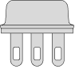
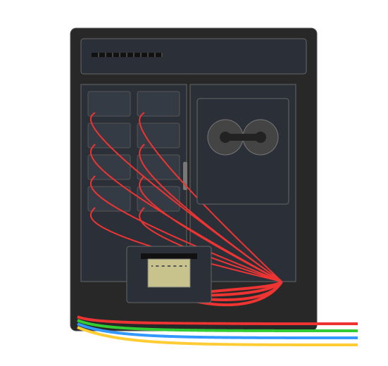
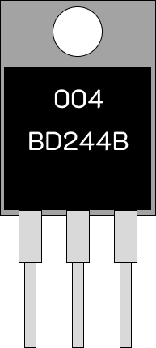

Транзистор типу ТО-3
ТО‑3 — потужний металевий транзистор, який використовували у комп’ютерах другого покоління. Він був надійним, але займав багато місця та потребував охолодження.
ЕОМ другого покоління
Транзистори зробили комп’ютери другого покоління значно меншими та ефективнішими. Поява мови програмування високого рівня дозволила швидше створювати програми.
Транзистор типу ТО-220
ТО‑220 — компактний транзистор сучасного типу, який використовується у багатьох електронних пристроях. Він ефективний і легко вбудовується у схеми.